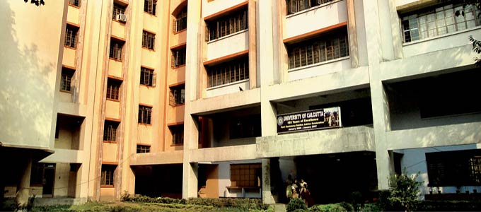
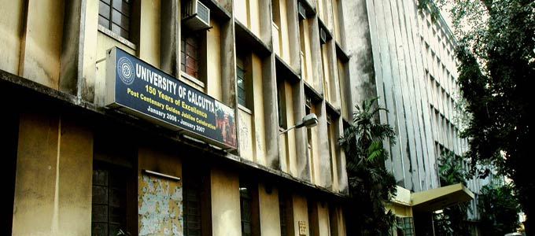
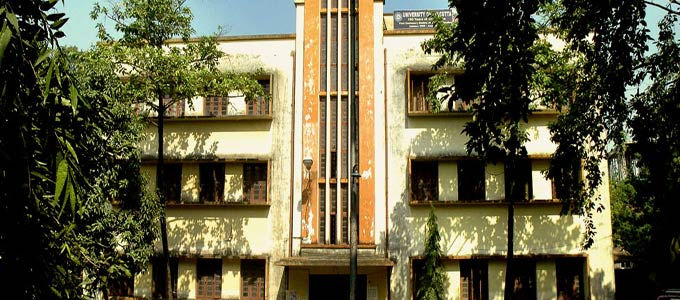
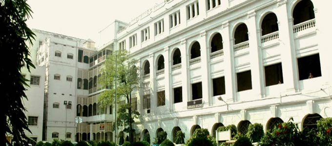
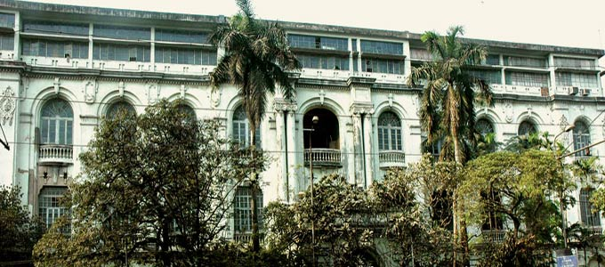
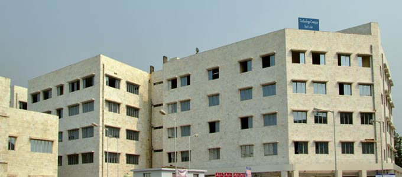

|  |
The idea of establishing a university in Calcutta was first mooted by the Council of Education in 1845 which suggested that in view of the ‘advanced state of education’ in Bengal, it was advisable to have a full-fledged university empowered to grant degrees to deserving students. Accordingly it drew up an elaborate scheme modelled on the University of London. Nothing came out of it, at least at that moment. o In 1853, C.H. Camerson, the President of the Council of Education submitted a petition to the House of Lords. Herein he revived the idea of a university.
A similar petition signed by Raja Radhakanta Deb and others on behalf of the members of the British India Association and others was also submitted in 1853.
The Education Despatch of 19 July, 1854, popularly known as Wood’s Despatch, had really cleared the path for setting up of universities. Wood, as the President of the Board of Control of the East India Company, was indeed interested in education, but he had a certain purpose. As he wrote to Lord Dalhousie, the Governor-General in India, although he accepted the idea of founding universities in India, he wanted these “to be mainly supported by those who are anxious for it”. He added that “if they choose to educate themselves, well and good, but I am against providing our own future detractors, opponents and grumblers”.
|
|  |
It was decided that the University of London was to serve as a model. The proposed university was to consist of a Chancellor, a Vice-Chancellor and Fellows who would constitute a Senate. The Senate would have the authority to manage the funds of the university and to frame regulations for examinations. The functions of the university would be to hold examinations and confer degrees. In the despatch it was explicitly stated that the examination for degrees should not include any subjects connected with religious belief.
On 27 June, 1855, The Court of Directors directed the Governor-General-in-Council to commence work. Meanwhile, the Government of India had set up a committee for preparing a scheme for the establishment of the universities in Calcutta, Bombay and Madras. Gordon Young, the Director of Public Instruction in Bengal was appointed Secretary of the committee that was split up into five subcommittees. One prepared the draft of a bill for incorporation while another prepared draft rules for examinations for granting degrees and for other cognate matters in the Faculty of Arts. Three other subcommittees undertook similar work in the Faculties of Medicine, Law and Civil Engineering.
|
|  |
The University Act (Act No.II of 1857) was passed by the Legislative Council and received the Governor-General’s assent on 24 January, 1857. This was indeed the foundational legislation in the history of the University of Calcutta. Altogether forty persons were named as Foundation Fellows.
Viscount Canning became the first Chancellor and Sir James William Colvile the first Vice-Chancellor of the University of Calcutta. The Chancellor, the Vice-Chancellor and the Fellows together formed one ‘Body Politic and Corporate by the name of the University of Calcutta’. The Body Corporate had the power to hold and dispose of any property vested in it for the purpose of the University. They were to constitute the Senate.
The Entrance Examination was conducted by the University for the first time in 1857. Among two hundred and forty four candidates who applied for the Entrance, ten were from the Delhi College |
|  |
The almost sub-continental jurisdiction of the University of Calcutta was gradually curtailed, first in 1882 when undivided Punjab and N.W.F.P. and British Baluchistan went to the Punjab University and then again in 1887 when United Provinces, Central Provinces and adjoining areas passed into the hands of Allahabad University.
Walter B. Granville, Calcutta’s leading Victorian architect of that time, designed the Senate House. Once completed, it became the most visible symbol of the University and a veritable landmark in the ‘City of Palaces’. It was constructed at a cost of Rs 4,34,697 and was formally inaugurated on the convocation day: 12 March, 1873.
|
|  |
Premchand Roychand, a Parsi millionaire of Bombay, made an unconditional offer of Rupees two lakh. The fact that this liberal offer came from Bombay testifies to the sub-continental span of the University of Calcutta from the very beginning. The first recipient of the Premchand Roychand studentship in 1868 was Asutosh Mukhopadhyay (not the future Vice-Chancellor) and was followed by many eminent scholars. Other early donors included Prosunno Coomar Tagore, Eshan Chandra Bose, the Maharaja of Vijianagram, Harischandra Chaudhuri of Mymensing, Maharaja Nilmoni Singh Deo of Pachete and a few other trusts.
The first honorary degree of Doctor of Law was conferred on the Prince of Wales at a special convocation held on 3 January, 1876.
The changing social basis of the educated classes widened during this period. Henry Sumner Maine, the eminent jurist and the fourth Vice-Chancellor of the University admitted this in 1866 : “The fact is, that the founders of the University of Calcutta thought to create an aristocratic institution; and, in spite of themselves, they have created a popular institution”.
|
|  |
In 1883, the degree of Bachelor of Arts of the University of Calcutta was conferred on two students of the Bethune College–Kadambini Ganguli and Chandramukhi Basu. They were the first two lady graduates of the University.
Gooroodass Banerjee became the first Indian Vice-Chancellor in 1890.
In 1891, two nominees of the graduates – Jogindrachandra Ghosh and Mahendranath Ray – took their seats as the first elected Fellows of the University.
Indian Universities Commission was appointed in January, 1902. Thomas Raleigh, the then Vice- Chancellor of the University of Calcutta was its President. Its members initially consisted of Syed Hossain Bilgirami, J.P. Hewett, Alexander Pedlar, A.G. Bourne and D. Mackichan. Curzon later included Gooroo Dass Banerjee as an afterthought. Based on the recommendations of the Universities Commission, the government drafted The Universities Bill. Banerjee differed from the majority opinion and submitted a note of dissent.
|
 |
The University attracted eminent educationists and scholars from different parts. Apart from stalwarts like C.V. Raman, Nilratan Sircar, Sarvepalli Radhakrishnan or Praphullachandra Ray, new entrants to its portal included Dineschandra Sen, Sunitikumar Chatterjee, Hiralal Halder, H.C. Roychaudhuri, D.C. Sarkar, Harendra Coomar Mookherjee, Surendranath Sen and a host of others who had made their mark in their respective fields and had won many accolades for the University.
In 1926, the Asutosh Building was formally opened.
In 1934, Syamaprasad Mookerjee became the Vice-Chancelor. At the age of 33, he became the youngest Vice-Chancellor of the University. During Syamaprasad’s tenure the University opened the Teachers’ Training Department in 1935 and the Asutosh Museum of Indian Art in 1937.
In 1937, Rabindranath was requested to compose a song which was to be adopted as the University song. Rabindranath responded to the request by composing two songs instead of one. These were: Chalo Jai, Chalo Jai and Shuvo Karmapathe Dharo Nirvayo Gaan. It was in 1937 that the poet addressed the Convocation in Bengali.
|